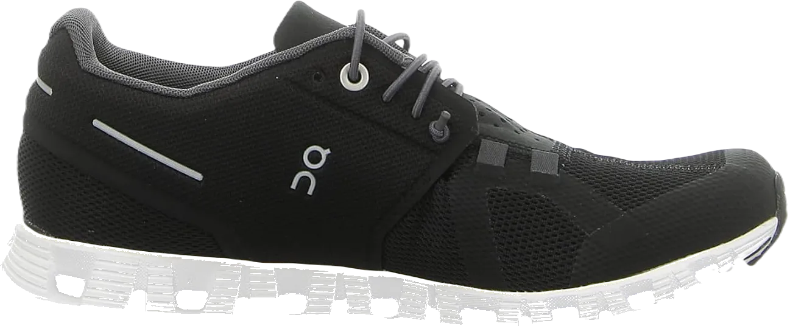

8 Best Neutral Running Shoes for Women’s 2024
When discussing the best neutral running shoes for women, these options are designed to provide both health benefits and comfort. These shoes offer excellent support, ensuring that women can enjoy a comfortable running experience. With the ability to keep harmful elements at bay, they focus on providing flexibility and durability, key factors in delivering optimal comfort.
These shoes stand out due to their balance of stability and performance. They are specifically crafted to offer the wearer a blend of benefits, including enhanced flexibility and long-lasting durability. Ideal for maintaining good foot health, these shoes offer great support while effectively managing the demands of running.
-
#1
Women Brooks Ghost 13 Shoes
.webp)
There are many types of shoes designed to offer excellent support and protect your feet from external elements. These shoes are great for providing a range of features that help with water resistance and even offer protection from shocks, ensuring that your feet stay safe and comfortable in various conditions.
These shoes excel in delivering technical support, making them ideal for those who need more than just basic footwear. Not only do they offer comfort, but they also come with superior quality that enhances your performance and control, making them a reliable choice for daily wear.
People love wearing these shoes for their high quality and the additional benefits they provide. With water and oil resistance, they ensure durability and functionality, making them perfect for work environments where these factors are crucial for performance and safety. -
#2
Mizuno wave rider 24
.webp)
Shoes are essential for everyone, and many people are always looking for footwear that offers both comfort and protection. When it comes to certain types of shoes, they provide a wide range of colors and styles while delivering extra comfort, proving how beneficial they are. These shoes are designed to ensure you get excellent results, whether for everyday use or specific activities.
These shoes possess qualities that make them stand out, offering both durability and a superior level of comfort. Their features ensure that you experience a high level of satisfaction, with added benefits that support your feet throughout the day.
For women who enjoy running, these shoes are specifically designed to meet their needs. They not only promote health and well-being but also offer support and protection, ensuring that harmful elements are kept away. These shoes are crafted to provide the best possible results for active lifestyles. -
#3
Hokaclifton 7
.webp)
These shoes offer a great range of features, providing excellent durability and flexibility to ensure optimal support. With waterproof resistance, they keep your feet protected in various conditions, ensuring you remain comfortable and secure. The shoes also have a shock-absorbing outsole and a rubber sole, which makes them perfect for absorbing impact and providing comfort for all-day wear.
Designed specifically for women, these shoes offer enhanced comfort and support. The effective sole ensures a smooth walking or running experience, catering to those who seek comfort and stability. Whether for casual use or active pursuits, these shoes are built to deliver top performance.
The combination of durability and flexibility in these shoes makes them a reliable choice. They provide extra support, resistance to wear and tear, and are designed to keep your feet in optimal condition, ensuring you stay comfortable and supported throughout your activities. -
#4
women’s on cloud shoes
Shoes are ideal for people seeking comfort, and there are many options designed to provide exactly that. These shoes offer a wide range of benefits, ensuring that you get the best results while keeping harmful elements at bay. They are crafted with precision to provide comfort and security, making sure your feet stay protected and supported throughout the day.
Many shoes are designed with excellent accessibility, focusing on both comfort and durability. These features are crucial for keeping your feet safe from external factors, ensuring long-lasting wear. The materials used ensure that your feet remain cushioned, and the shoes themselves are built to withstand various conditions. -
#5
New balance fresh foam 880v10
.webp)
Shoes offer excellent durability and flexibility, ensuring that you get the best results with optimal support. These shoes are designed to provide great comfort while maintaining stability, making them a reliable option for anyone looking for both comfort and functionality.
There are many types of shoes that offer a wide range of benefits, including the ability to protect against various external factors. These shoes are equipped with essential features to prevent injuries, especially during activities like running. Their construction ensures that your feet are safeguarded from common issues that may arise during intense physical activity.
Additionally, these shoes excel in resolving perspiration problems, keeping your feet cool and dry for maximum comfort. People appreciate the value these shoes provide, offering great quality and flexibility without breaking the bank. With affordability in mind, these shoes give you excellent performance at a lower price point, ensuring you get the best results without overspending. -
#6
Asics gel-nimbus 23
.webp)
Shoes are great at offering a wide range of features, ensuring that they can protect your feet from various external factors. Many types of shoes are designed to provide extra comfort and energy, making them ideal for long-term wear. These shoes combine durability and flexibility, giving you the best combination of both. With a variety of shoes available, you can be sure to find options that offer excellent support and protection for your feet.
Shoes are designed to give you added comfort while addressing common issues faced during activities like running. They are built to provide the right amount of support and have the ability to keep any discomfort or external problems at bay. From excellent cushioning to reliable flexibility, these shoes ensure that your feet stay comfortable throughout any activity. Their wide selection of colors and designs allows you to choose the best pair that suits your preferences and style. -
#7
Saucony ride 13
.webp)
The shoes we are discussing offer various features that are ideal for you. With so many options available, these shoes stand out due to their rubber soles, providing extra comfort and cushioning. They are designed to keep harmful elements at bay, ensuring your feet are protected and comfortable throughout the day. These shoes not only offer protection but also bring comfort to a whole new level.
These shoes are known for their superior comfort, making them a top choice. The cushioning and support they provide are exceptional, ensuring that your feet stay comfortable no matter how long you wear them. The design is focused on durability and flexibility, ensuring that the shoes can withstand daily wear and tear while providing a snug fit. -
#8
Altra trion 4.0
.webp)
Shoes are known to provide the best comfort and support, with the ability to keep unwanted elements away. Among the many types available, these shoes stand out for their exceptional results. They offer superior comfort and great value, making them an ideal choice for anyone seeking reliable footwear. The support they provide ensures that your feet stay comfortable and protected throughout the day.
These shoes excel at providing the protection and durability you need. With a rubber sole designed to keep harmful elements away, they also offer ease of maintenance. The cleaning process is simple, addressing any issues or concerns you may have while wearing them. Their design ensures both comfort and practicality, making them a top choice for daily wear.